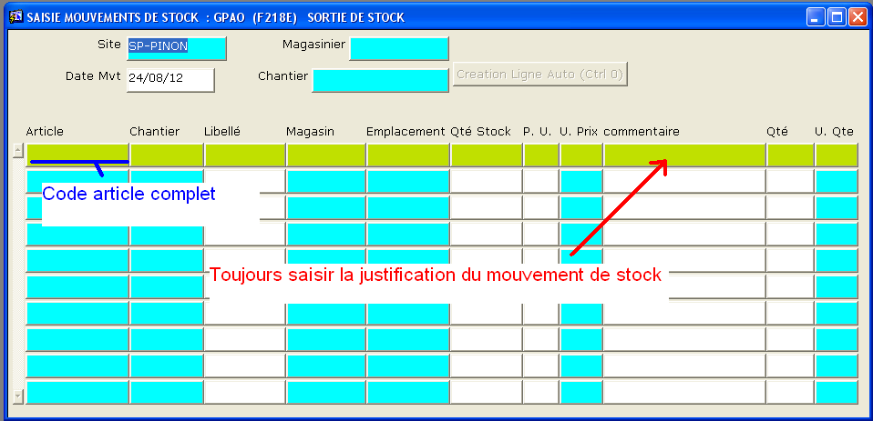

Saisie ENTREE ou SORTIE de stock
Note : Les écrans ENTREE et SORTIE de stock fonctionnent de façon identique.
Ces écrans ne devraient être utilisés qu'à titre exceptionnel

Note dans le cas d'une ENTREE / SORTIE de stock :
Cet écran sert uniquement à remettre ou sortir de stock des articles
présentant une erreur de stock
- les entrées en stock se font en automatique avec le programme réception
- les entrées en production par les listes à servir
- les retours en stocks par les transferts entre magasin
- les sorties de produits finis (ou semi-finis) par des BL
- les sous-traitances par des commandes de sous-traitance et des bordereaux d'expédition (BE)
- etc... (tout mouvement de stock correspond à un document / écran GENI)
Le champ commentaire est là pour justifier l'utilisation de ce programme.
Si le champ chantier dans l'entête est renseigné, le champ chantier sur la ligne est repris automatiquement.
Inversement, si le champ chantier n'est pas renseigné dans l'entête, le champ chantier doit être renseigné sur les lignes.
Saisir une entrée ou une sortie de stock :
- Compléter l'entête : Site, Magasinier, date de mouvement, chantier
- Rechercher l'article à mouvementer : saisir une partie de l'abrégé puis appuyer sur F4, valider par Entrée
- Le programme affiche le libellé de l'article, le magasin par défaut et la quantité en stock
- Choisir un magasin et un emplacement (F4)
- Saisir un commentaire et la quantité à mouvementer
- Appuyer sur F5 en fin de saisie pour valider le mouvement.
Le
Prix Unitaire (P.U.) doit correspondre à l'unité de prix.(U. Prix)
Exemple : pour une tôles de dimensions 1000*2000, l'unité de
prix est le m²,
il faut donc saisir un Prix au m² et non le prix unitaire de la tôle.
